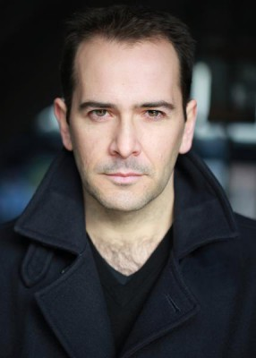

#2444 Survivor


 IMDB-Wertung: 5.6 / 10
IMDB-Wertung: 5.6 / 10  Metascore: 28
Metascore: 28 
Homeland-Security-Agentin Kate Abbott ist in der US-Botschaft in London stationiert, um Terroristen, die versuchen, in die USA auszureisen, an ihrem Vorhaben zu hindern. Als sie nach einem Todesfall unter rätselhaften Umständen auf einige Wissenschaftler aufmerksam wird, die allesamt auf explosive Chemikalien spezialisiert sind und schon Visa zur Einreise in die USA beantragt haben, kommt es zu einem verheerenden Bombenattentat. All ihre Kollegen kommen ums Leben und Kate selbst wird für den Vorfall verantwortlich gemacht und zum Abschuss freigegeben. Auf ihrer Flucht vor dem Gesetz muss sie sich besonders vor dem mysteriösen Auftragskiller „The Watchmaker“ in Acht nehmen, der ihr dicht auf den Fersen ist. Als sie herausfindet, dass zur Neujahrsfeier auf dem Times Square ein weiterer Anschlag geplant ist, beginnt ein Wettlauf gegen die Zeit…
Jahr: 2015
Dauer: 96 Minuten
FSK: 16
Land: USA Studio: AlchemyTonspuren: DD5.1 - ,
Untertitel:
Auflösung: 1080p (1920x808) Größe: 6973 MB
Genre: Action, Krimi, Thriller
Regisseur: James McTeigue
Drehbuch: Philip Shelby
Soundtrack: Ilan Eshkeri
Darsteller:
 Parker Sawyers als Ray
Parker Sawyers als Ray Dylan McDermott als Sam Parker
Dylan McDermott als Sam Parker Bashar Rahal als Militiaman #2
Bashar Rahal als Militiaman #2 Robert Forster als Bill Talbot
Robert Forster als Bill Talbot Roger Rees als Emil Balan
Roger Rees als Emil Balan- Sean Teale als Alvin Murdock
- Regé-Jean Page als Robert Purvell
 Frances de la Tour als Sally
Frances de la Tour als Sally- Jing Lusi als Joyce Su
 Genevieve O'Reilly als Lisa Carr
Genevieve O'Reilly als Lisa Carr- Antonia Thomas als Naomi Rosenbaum
 Milla Jovovich als Kate Abbott
Milla Jovovich als Kate Abbott- Paddy Wallace als Johnny Talbot
 Benno Fürmann als Pavlou
Benno Fürmann als Pavlou- Jerry-Jane Pears als Nymphet
 Pierce Brosnan als Nash
Pierce Brosnan als Nash Sabine Crossen als New Zealand Scientist
Sabine Crossen als New Zealand Scientist- Zak Shukor als Cambodian Scientist
- Jean Baptiste Fillon als Andre Delouvaine
 Malcolm Sinclair als Perry
Malcolm Sinclair als Perry- Alex Beckett als Howie
 James D'Arcy als Paul Anderson
James D'Arcy als Paul Anderson Angela Bassett als Maureen Crane
Angela Bassett als Maureen Crane Katarzyna Wolejnio als Saleswoman
Katarzyna Wolejnio als Saleswoman-  James Howard als CTC Agent #1
- Sonya Cassidy als Helen
 Aaron Ly als Cantonese Businessman
Aaron Ly als Cantonese Businessman- Chloe Hesar als Theater Cashier
 Corey Johnson als Eric Loomis
Corey Johnson als Eric Loomis- William Tapley als Marine Commander
- Samantha Coughlan als Ticket Agent #1
- Susannah Allman als Ticket Agent #2
- Alexis Peterman als Flight Attendant
- Naveed Khan als Gypsy Cabbie
- Suanne Braun als US Commentator
- Leemore Marrett Jr. als Times Square Cop
 Doug Cockle als Burly Worker #1
Doug Cockle als Burly Worker #1 David Menkin als Traffic Cop
David Menkin als Traffic Cop Ian Porter als Concierge #2
Ian Porter als Concierge #2- Robin Byers als NYPD Cop #1
 Dilyana Bouklieva als Visa-Immigrations Officer , uncredited
Dilyana Bouklieva als Visa-Immigrations Officer , uncredited Ancuta Breaban als Commuter , uncredited
Ancuta Breaban als Commuter , uncredited- Ivaylo Grancharov als Police Officer , uncredited
 Lee Nicholas Harris als British Transport Police , uncredited
Lee Nicholas Harris als British Transport Police , uncredited Bron James als Student , uncredited
Bron James als Student , uncredited Joelle Koissi als Visa applicant , uncredited
Joelle Koissi als Visa applicant , uncredited- Bruce Lawrence als Marine 1 , uncredited
 Hugh O'Brien als American embassy worker , uncredited
Hugh O'Brien als American embassy worker , uncredited Adrian Palmer als Athlete , uncredited
Adrian Palmer als Athlete , uncredited- David G. Robinson als Train Guard , uncredited
Datei: X:\2015(N-Z)\Survivor (2015, FSK16, 1920x808).mkv seit 11.11.2015
Festplatte: HD 2015(A-Z)
 Es gibt insgesamt 161 Filme in der Gruppe '2015(N-Z)'
Es gibt insgesamt 161 Filme in der Gruppe '2015(N-Z)'